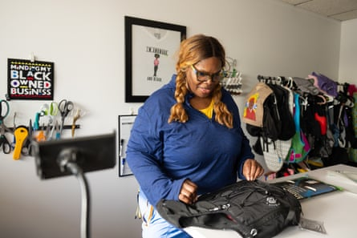
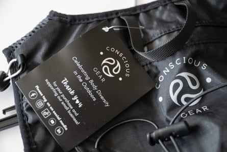

C harlotte Young Bowens was 48 years old and 48 miles into a 50-mile ultramarathon when suddenly she slumped to her knees and collapsed to the ground, emotionally and physically exhausted. Curled into the fetal position, she began crying harder than she had in years.
She wondered if she could finish. She rolled over on her back, looked up at the sky and thought back to a dark period in her life, when she was clinically depressed and not sure if she wanted to live. She no longer doubted. She knew she could and would finish the race.
Not long after completing the ultramarathon, she committed to building a business , Conscious Gear, focused on helping people spend time outdoors, which was so central to her recovery.
She began producing a hydration vest intended to eliminate an obstacle that overweight and obese people have when trying to make life-saving changes: finding athletic clothing or gear that actually fits.
It is now stocked on REI’s website – and Young Bowens, now 58, describes it as a miracle that she has made it this far.
A native of Ann Arbor, Michigan, Young Bowens worked for more than 15 years in administrative research roles at the University of Michigan and Arizona State University.
Charlotte Young Bowens at her office in Phoenix, Arizona.Photograph: Caitlin O’Hara/The Guardian
Sixteen months before that ultramarathon, Young Bowens passed out at work and woke up in an emergency room. A doctor warned her that her weight of 400 pounds, high blood pressure, cholesterol levels and prediabetes put her at risk of early death. Not least, she suffered from debilitating depression. But she joined a gym and stepped on to a treadmill for the first time.
“I had never been physically active before, nor had I been in any sports,” Young Bowens said. “That first day, I could barely walk for two minutes at 2mph, but something in me was committed and ready to go, so I just kept putting one foot in front of the other.”
She discovered she loved to run. Soon, she felt ready for a 5km race. Then a 10km, a half marathon and finally a full marathon.
But her newfound life created a different problem: finding wearable hydration gear – lightweight vests and fanny packs designed to carry liquids for runners and hikers – that comfortably fit her body. So she bought an extra-large and a large vest and sewed them together. She didn’t even own a sewing machine, so she had to check one out at the local public library.
When she’d show up in her homemade haute hydration gear, fellow hikers noticed. They’d ask: “Where’d you get that?”
In less than two years, Young Bowens shed more than 200 pounds. And she entered Run Woodstock , the ultramarathon in Gregory, Michigan, where she had an awakening that sent her to her knees.
“In that moment, I realized something had changed, the switch had been turned on, and I did want to live,” said Young Bowens. “I can really live and do great and wonderful things.”
A Conscious Gear VestaPak.Photograph: Caitlin O’Hara/The Guardian
After that first ultramarathon, she started competing in others. The more she moved, the less depressed she felt. Young Bowens became so committed that in 2019, she moved to Arizona, where she had access to more running and hiking trails.
She continued making her own vests until friends encouraged her to start a business. Her concept: Conscious Gear , a company that makes wearable hydration vests for big and tall people.
“Conscious Gear is about celebrating body diversity.” said Young Bowens. “We’ve created this hydration vest designed by and for us, taller, curvier, more muscular and bigger bodies.”
She saw that there was demand. The market for hydration running vests recorded revenue of $150m in 2024 and is projected to rise to $300m by 2033, according to Verified Market Reports .
But there was also a need. Having appropriate gear to fit one’s body to feel comfortable while exercising is vital, said Mary Himmelstein, an assistant professor of psychological sciences at Kent State University in Ohio.
“If you’re in a space like a gym or a pool, or outdoors and in an outfit that doesn’t fit you, you’re constantly being told this subconscious message that ‘I don’t belong’,” said Himmelstein. “You think, ‘This isn’t me,’ and if that’s how you feel, you’re not going to engage in that activity.”
With no background in business, Young Bowens looked for guidance. She won a place at We Rise , a six-month accelerator program for entrepreneurs in Arizona.
She made applying for grants a central part of raising capital, which was in Young Bowens’ wheelhouse. She’d been doing it professionally for decades for academic institutions. And in the wake of the pandemic and the George Floyd protests, there was increased corporate support for Black businesses and entrepreneurs.
“I’d spend every Friday night with a glass of wine and apply to dozens of programs,” said Young Bowens.
At first, weeks of applying yielded zero funds. She kept going and secured $80,000 in grants before launching the Conscious Gear website in 2023.
Young Bowens said she’s watched fellow entrepreneurs go into debt by borrowing too much or exhausting their credit limits.
“I don’t know that struggle just yet. And honestly, I’m trying not to; I’m trying to avoid that for a little bit longer if I can,” she said.
To prototype her designs, Young Bowens worked with an industrial designer, and then located a manufacturer in Weihai, China, to produce vest components. After they are delivered, she customizes them in her office in Tempe .
She said her vests are designed to fit bigger bodies and not just sized up, which is what many other manufacturers do. Her products might be better described as size-inclusive, and could be a gamechanger for obese people who want to be active, said Robyn Pashby, a Washington DC-based psychologist who serves on the national board of directors of the Obesity Action Coalition.
“To only include up to size XL, or maybe double XL, is not size-inclusive,” said Pashby.
Conscious Gear’s ultra-light vest, named the VestaPak, comes in three sizes with names inspired by Young Bowens’ favorite musical group: Earth (large to 2X), Wind (3X to 5X) and Fire (6X to 8X).

Charlotte Young Bowens walks on the Pima Canyon Trail with her VestaPak at South Mountain Park in Phoenix on 4 April.Photograph: Caitlin O’Hara/The Guardian
It is sold at a number of REI stores across the country, as well as on the retailer’s website. Young Bowens has also discovered an unexpected customer base.
“Surprisingly, 80% of my customers are men, who are gearheads. For some men, an outdoor lifestyle is a status symbol,” she said. “I’m also shocked by the number of orders I get from Australia. Sometimes the shipping costs as much as the product, but they keep ordering, so they must love it.”
The tariffs recently enacted by Donald Trump have presented a challenge – Young Bowens’ costs are increasing, so she plans to start manufacturing most components in Arizona. And she’s still in search of grants to allow her to expand.
But she’s also aware of what she’s accomplished. Recently, Young Bowens came across laminated pictures of her first design, the one she made on the borrowed sewing machine. “I used to go to events and tell people, ‘This is what I make. This is what I’m going to be making.’ Now I look at it, I kind of cringe,” she said, laughing. “Yeah, they were homemade, but I was proud.”